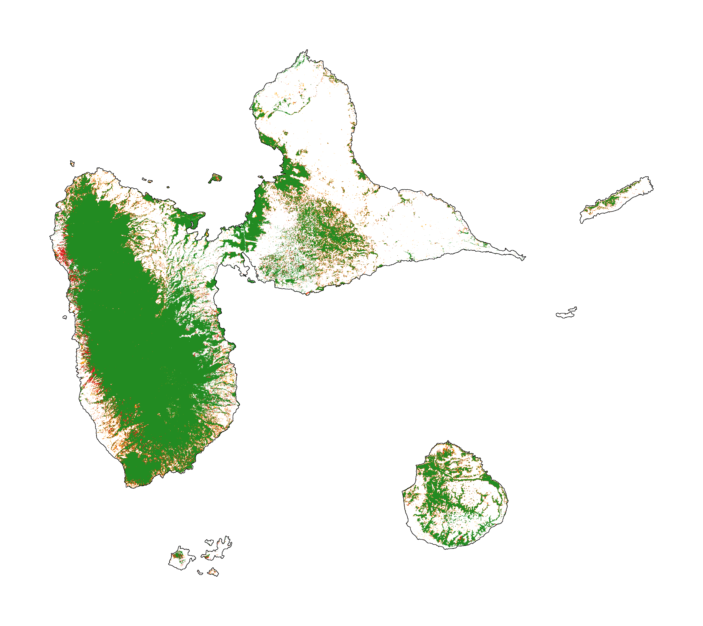
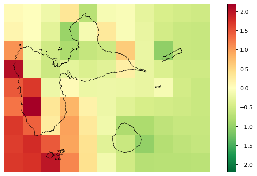
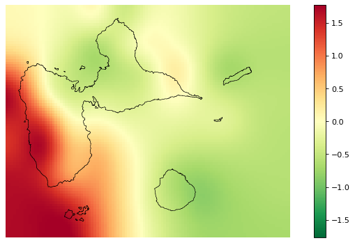
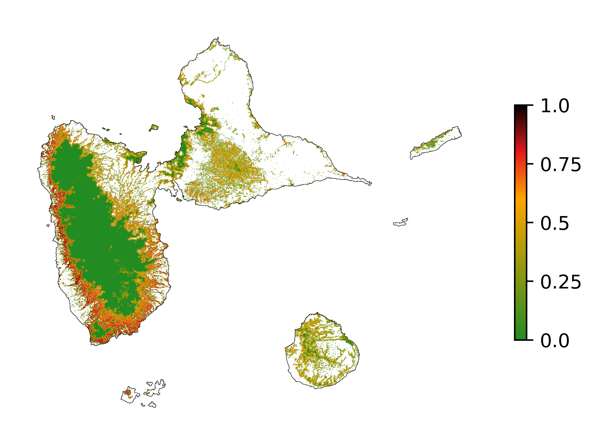
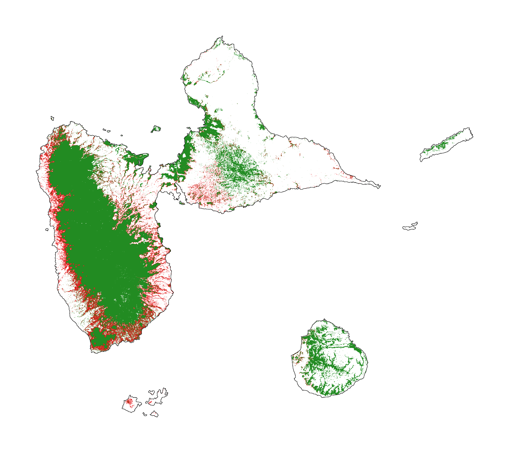

Get started¶
[1]:
# Imports
import os
from shutil import copy2
import urllib.request
from zipfile import ZipFile
import forestatrisk as far
# forestatrisk: modelling and forecasting deforestation in the tropics.
# https://ecology.ghislainv.fr/forestatrisk/
We create a directory to hold the outputs with the help of the function .make_dir().
[2]:
# Make output directory
far.make_dir("output")
1. Data¶
1.1 Import and unzip the data¶
We use the Guadeloupe archipelago as a case study.
[3]:
# Source of the data
url = "https://github.com/ghislainv/forestatrisk/raw/master/docsrc/notebooks/data_GLP.zip"
if os.path.exists("data_GLP.zip") is False:
urllib.request.urlretrieve(url, "data_GLP.zip")
with ZipFile("data_GLP.zip", "r") as z:
z.extractall("data")
1.2 Files¶
The data folder includes, among other files:
The forest cover change data for the period 2010-2020 as a GeoTiff raster file (
data/fcc23.tif).Spatial variables as GeoTiff raster files (
.tifextension, eg.data/dist_edge.tiffor distance to forest edge).
1.3 Sampling the observations¶
[4]:
# Sample points
dataset = far.sample(nsamp=10000, adapt=True, seed=1234, csize=10,
var_dir="data",
input_forest_raster="fcc23.tif",
output_file="output/sample.txt",
blk_rows=0)
Sample 2x 10000 pixels (deforested vs. forest)
Divide region in 168 blocks
Compute number of deforested and forest pixels per block
100%
Draw blocks at random
Draw pixels at random in blocks
100%
Compute center of pixel coordinates
Compute number of 10 x 10 km spatial cells
... 99 cells (9 x 11)
Identify cell number from XY coordinates
Make virtual raster with variables as raster bands
Extract raster values for selected pixels
100%
Export results to file output/sample.txt
[5]:
# Remove NA from data-set (otherwise scale() and
# model_binomial_iCAR do not work)
dataset = dataset.dropna(axis=0)
# Set number of trials to one for far.model_binomial_iCAR()
dataset["trial"] = 1
# Print the first five rows
print(dataset.head(5))
altitude dist_defor dist_edge dist_river dist_road dist_town fcc23 \
0 30.0 642.0 30.0 8448.0 1485.0 6364.0 0.0
1 37.0 765.0 30.0 8583.0 1697.0 6576.0 0.0
2 78.0 216.0 30.0 7722.0 949.0 5743.0 0.0
3 80.0 277.0 30.0 8168.0 1172.0 6047.0 0.0
4 46.0 30.0 30.0 6179.0 541.0 6690.0 0.0
pa slope X Y cell trial
0 0.0 8.0 -6842295.0 1851975.0 4.0 1
1 0.0 7.0 -6842235.0 1852095.0 4.0 1
2 0.0 5.0 -6842535.0 1851195.0 4.0 1
3 0.0 2.0 -6842445.0 1851615.0 4.0 1
4 0.0 1.0 -6840465.0 1849755.0 4.0 1
2. Model¶
2.1 Model preparation¶
[6]:
# Neighborhood for spatial-autocorrelation
nneigh, adj = far.cellneigh(raster="data/fcc23.tif", csize=10, rank=1)
# List of variables
variables = ["scale(altitude)", "scale(slope)",
"scale(dist_defor)", "scale(dist_edge)", "scale(dist_road)",
"scale(dist_town)", "scale(dist_river)"]
# Formula
right_part = " + ".join(variables) + " + cell"
left_part = "I(1-fcc23) + trial ~ "
formula = left_part + right_part
# Starting values
beta_start = -99 # Simple GLM estimates
# Priors
priorVrho = -1 # -1="1/Gamma"
Compute number of 10 x 10 km spatial cells
... 99 cells (9 x 11)
Identify adjacent cells and compute number of neighbors
2.2 iCAR model¶
[7]:
# Run the model
mod_binomial_iCAR = far.model_binomial_iCAR(
# Observations
suitability_formula=formula, data=dataset,
# Spatial structure
n_neighbors=nneigh, neighbors=adj,
# Priors
priorVrho=priorVrho,
# Chains
burnin=1000, mcmc=1000, thin=1,
# Starting values
beta_start=beta_start)
Using estimates from classic logistic regression as starting values for betas
2.3 Model summary¶
[8]:
# Predictions
pred_icar = mod_binomial_iCAR.theta_pred
# Summary
print(mod_binomial_iCAR)
# Write summary in file
with open("output/summary_icar.txt", "w") as f:
f.write(str(mod_binomial_iCAR))
Binomial logistic regression with iCAR process
Model: I(1 - fcc23) + trial ~ 1 + scale(altitude) + scale(slope) + scale(dist_defor) + scale(dist_edge) + scale(dist_road) + scale(dist_town) + scale(dist_river) + cell
Posteriors:
Mean Std CI_low CI_high
Intercept -3.84 0.224 -4.23 -3.27
scale(altitude) -0.5 0.105 -0.679 -0.293
scale(slope) -0.0159 0.0545 -0.117 0.0906
scale(dist_defor) -2.06 0.274 -2.51 -1.51
scale(dist_edge) -6.89 0.44 -7.78 -6.2
scale(dist_road) -0.0408 0.0573 -0.159 0.0702
scale(dist_town) -0.0916 0.0444 -0.175 0.0032
scale(dist_river) -0.0122 0.0347 -0.0838 0.0607
Vrho 3.12 0.852 1.83 5.07
Deviance 1.52e+04 48 1.52e+04 1.54e+04
3. Predict¶
3.1 Interpolate spatial random effects¶
[9]:
# Spatial random effects
rho = mod_binomial_iCAR.rho
# Interpolate
far.interpolate_rho(rho=rho, input_raster="data/fcc23.tif",
output_file="output/rho.tif",
csize_orig=10, csize_new=1)
Write spatial random effect data to disk
Compute statistics
Build overview
Resampling spatial random effects to file output/rho.tif
3.2 Predict deforestation probability¶
[10]:
# Update dist_edge and dist_defor at t3
os.rename("data/dist_edge.tif", "data/dist_edge.tif.bak")
os.rename("data/dist_defor.tif", "data/dist_defor.tif.bak")
copy2("data/forecast/dist_edge_forecast.tif", "data/dist_edge.tif")
copy2("data/forecast/dist_defor_forecast.tif", "data/dist_defor.tif")
# Compute predictions
far.predict_raster_binomial_iCAR(
mod_binomial_iCAR, var_dir="data",
input_cell_raster="output/rho.tif",
input_forest_raster="data/forest/forest_t3.tif",
output_file="output/prob.tif",
blk_rows=10 # Reduced number of lines to avoid memory problems
)
# Reinitialize data
os.remove("data/dist_edge.tif")
os.remove("data/dist_defor.tif")
os.rename("data/dist_edge.tif.bak", "data/dist_edge.tif")
os.rename("data/dist_defor.tif.bak", "data/dist_defor.tif")
Make virtual raster with variables as raster bands
Divide region in 296 blocks
Create a raster file on disk for projections
Predict deforestation probability by block
100%
Compute statistics
4. Project future forest cover change¶
[11]:
# Forest cover
fc = list()
dates = ["t2", "t3"]
ndates = len(dates)
for i in range(ndates):
rast = "data/forest/forest_" + dates[i] + ".tif"
val = far.countpix(input_raster=rast, value=1)
fc.append(val["area"]) # area in ha
# Save results to disk
f = open("output/forest_cover.txt", "w")
for i in fc:
f.write(str(i) + "\n")
f.close()
# Annual deforestation
T = 10.0
annual_defor = (fc[0] - fc[1]) / T
print("Mean annual deforested area during the period 2010-2020: {} ha/yr".format(annual_defor))
Divide region in 168 blocks
Compute the number of pixels with value=1
100%
Compute the corresponding area in ha
Divide region in 168 blocks
Compute the number of pixels with value=1
100%
Compute the corresponding area in ha
Mean annual deforested area during the period 2010-2020: 498.375 ha/yr
[12]:
# Projected deforestation (ha) during 2020-2050
defor = annual_defor * 30
# Compute future forest cover in 2050
stats = far.deforest(
input_raster="output/prob.tif",
hectares=defor,
output_file="output/fcc_2050.tif",
blk_rows=128)
Divide region in 24 blocks
Compute the total number of forest pixels
100%
Identify threshold
Minimize error on deforested hectares
Create a raster file on disk for forest-cover change
Write raster of future forest-cover change
100%
Compute statistics
5. Figures¶
5.1 Historical forest cover change¶
Forest cover change for the period 2000-2010-2020
[13]:
# Plot forest
fig_fcc123 = far.plot.fcc123(
input_fcc_raster="data/forest/fcc123.tif",
maxpixels=1e8,
output_file="output/fcc123.png",
borders="data/ctry_PROJ.shp",
linewidth=0.2,
figsize=(5, 4), dpi=800)

5.2 Spatial random effects¶
[14]:
# Original spatial random effects
fig_rho_orig = far.plot.rho("output/rho_orig.tif",
borders="data/ctry_PROJ.shp",
linewidth=0.5,
output_file="output/rho_orig.png",
figsize=(9,5), dpi=80)
# Interpolated spatial random effects
fig_rho = far.plot.rho("output/rho.tif",
borders="data/ctry_PROJ.shp",
linewidth=0.5,
output_file="output/rho.png",
figsize=(9,5), dpi=80)
Build overview


5.3 Spatial probability of deforestation¶
[15]:
# Spatial probability of deforestation
fig_prob = far.plot.prob("output/prob.tif",
maxpixels=1e8,
borders="data/ctry_PROJ.shp",
linewidth=0.2,
legend=True,
output_file="output/prob.png",
figsize=(5, 4), dpi=800)

5.4 Future forest cover¶
[16]:
# Projected forest cover change (2020-2050)
fcc_2050 = far.plot.fcc("output/fcc_2050.tif",
maxpixels=1e8,
borders="data/ctry_PROJ.shp",
linewidth=0.2,
output_file="output/fcc_2050.png",
figsize=(5, 4), dpi=800)
